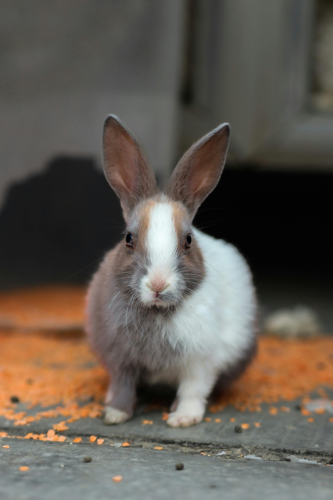
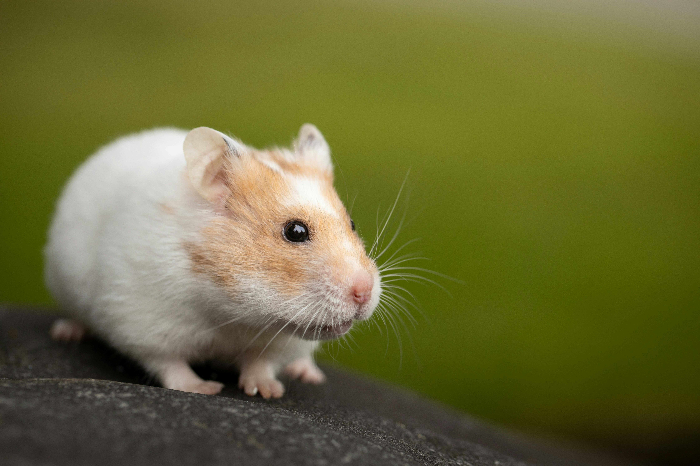
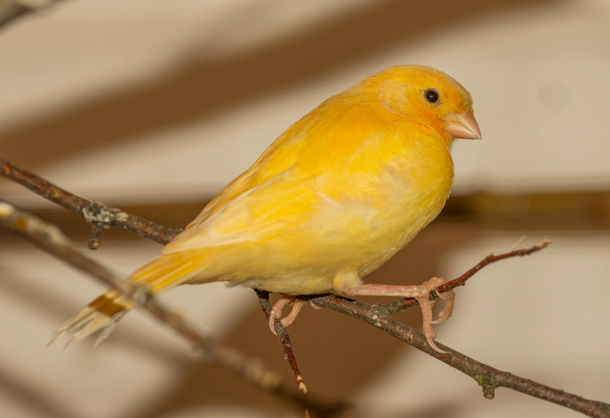
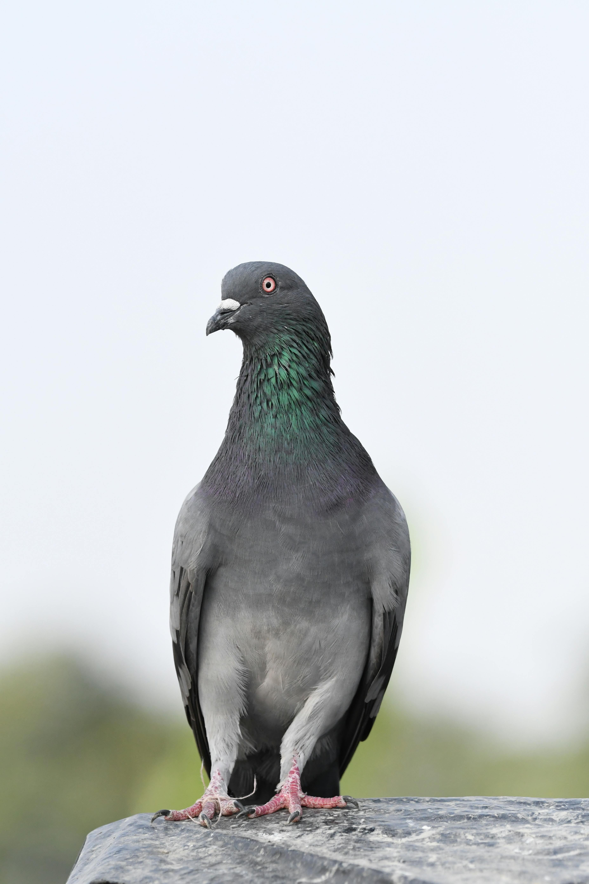
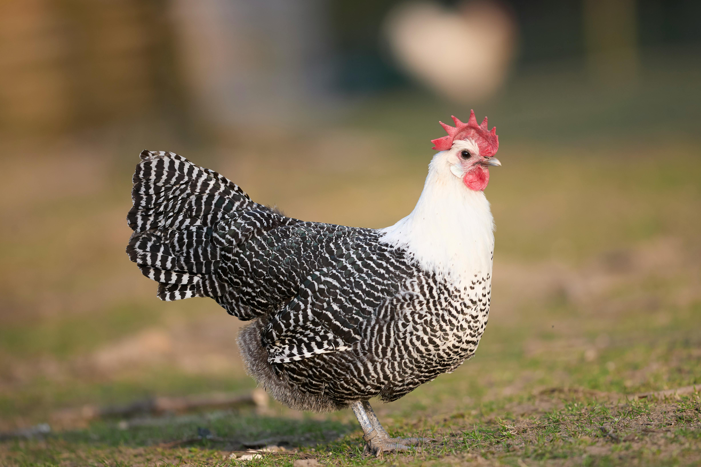

Praktični vodiči odgajivača — šta jede, gde živi i kako prepoznati zdrav primerak. Sve što ne piše u priručniku nego se uči od ljudi koji to rade decenijama.

Zec nije igračka za decu i nije „mali pas". Razlozi zbog kojih se najviše vraća u udruženja, i kako ih izbeći.
Pročitaj članak
Bazna podloga, visina, broj nivoa i šta nikako ne sme da bude u kavezu. Tabela po vrsti hrčka.
Pročitaj članak
Roller, Waterslager, Timbrado — tri škole pevanja, kako se boduju i koje rase se najviše izlažu kod nas.
Pročitaj članakNajnoviji članci

Šta raditi kad roditelj odbije mladunce — protokol prinudnog hranjenja prvih 14 dana.
Pročitaj →
Najčešće dijagnoze, kada zvati veterinara, i kako sprečiti širenje na ostatak jata.
Pročitaj →Šta ocenjuje sudija, koji su uobičajeni razlozi diskvalifikacije i kako pripremiti grlo za izlaganje.
Pročitaj →Karakter, prostor, ishrana i razmnožavanje — sve razlike između dve najpopularnije vrste.
Pročitaj →Kada je linjanje normalno, a kada znak bolesti. Ishrana i osvetljenje koji ubrzavaju proces.
Pročitaj →Vežbe za visokoletače i prevrtače — sat, vreme, broj puštanja po nedelji.
Pročitaj →Hvatanje, držanje i prodaja zaštićenih divljih vrsta zabranjeni su Zakonom o zaštiti prirode — propisane kazne idu do 2.000.000 RSD.
Pročitaj propiseNe hvatajte je sami. Kontaktirajte zoohigijenu, najbližu ZOO ustanovu ili veterinara — predaja zaštićenih vrsta je obaveza po zakonu.